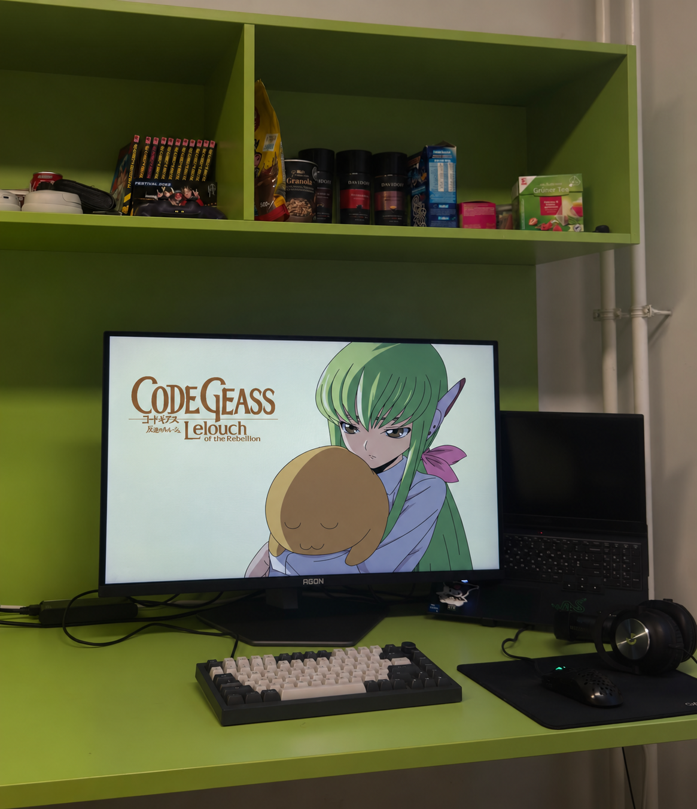

Moje pracovné prostredie
Ako pracujem
Pri svojom pracovnom stole sa venujem programovaniu, učeniu a príprave školských zadaní. Notebook a väčší monitor mi umožňujú mať vedľa seba otvorený kód, poznámky a materiály k štúdiu.
Vo voľnom čase pri tomto stole počúvam hudbu alebo hrám počítačové hry.
Môj pracovný stôl
Označené body predstavujú vybavenie, ktoré používam pri práci. Prejdite na bod myšou, kliknite naň alebo ho vyberte klávesom Tab.
